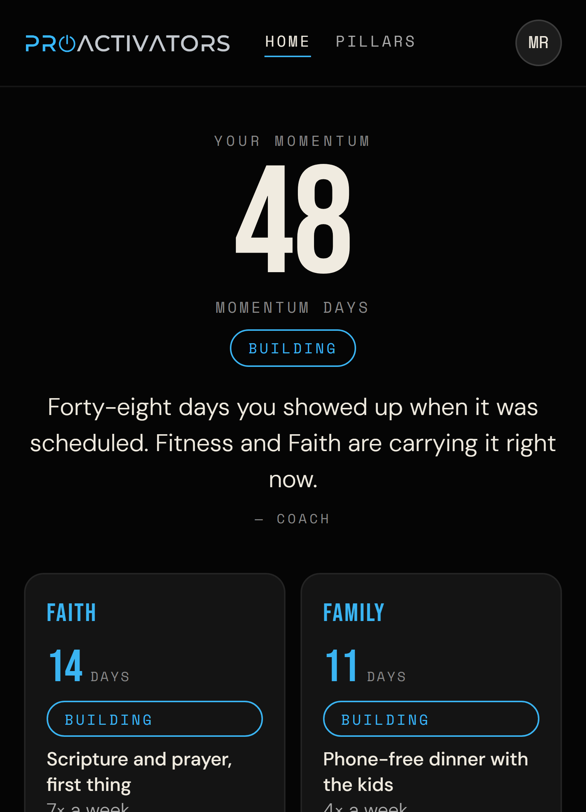
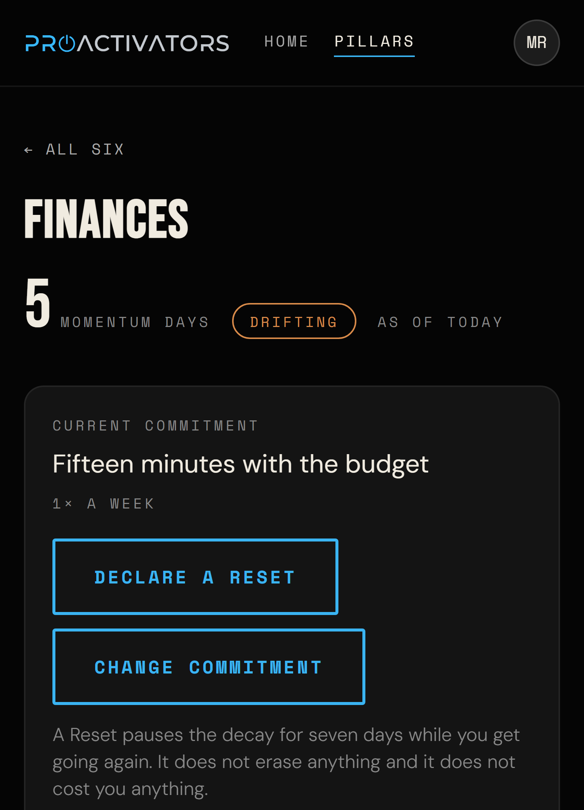

Six weeks to begin. Then one pillar at a time, at a level you set yourself, for as long as it takes. Here is exactly how it works.
Nobody decides to drift. You stop following through quietly, in one area, while the rest of your life still looks fine from the outside. The calendar fills. The years move. And the thing you meant to become stays a thing you meant to become.
Most people are not failing.
They are drifting.
Drift is not a character flaw and this system does not treat it as one. It is simply lost forward movement — and the first useful thing anyone can do about it is see it clearly, on a screen, without excuses and without shame.
Foundation is six weeks, and it deliberately asks very little at the start. Week one is about thirty seconds of journaling a day. That is the whole assignment.
The first victory is not a dramatic life change. It is discovering that you can keep a small promise to yourself — which, if you have broken a lot of them, is not small at all.
After Foundation comes the Pillars: Faith, Family, Fitness, Finances, Focus, Fulfillment. You work on one at a time and you set the commitment yourself. Someone who has not exercised in years might choose to walk ten minutes, three days a week. Someone else might choose something far harder. Both are ownership. You are not being measured against each other — you are measured against what you said you would do.
Did I do what I said
I was going to do?
The rhythm is the same every week, so it stops being a decision and starts being a habit.
The Coach is not a generic chatbot. It knows what week you are in, which pillar you chose, what you committed to, and the words you used when you wrote about it. It can encourage you, reflect your own patterns back to you, and — when you have been comfortable for a while — ask whether there is more in you.
You own your life. The Coach helps you think clearly about it. That distinction is the whole design.
A streak resets to zero the first day you miss. That is how most apps work, and it is why most people quit them in week three — one bad Tuesday and the whole thing is gone.
This does not reset. Every scheduled practice you complete adds to a momentum balance. A missed day never subtracts. Only genuine inactivity does, and only after seven days of grace — so a hard week costs you nothing, and a hard month costs you slowly, visibly, with a way back the whole time.


It will also tell you when it does not know. A pillar without enough days behind it reads “not enough days yet” rather than showing a number we invented. And when you fall, you do not start again from nothing — you declare a Reset, which pauses the decline while you get going, records what changed, and erases none of it.
You cannot do this alone, and the people around you are not optional equipment. The Boardroom is where members meet, and it runs on three questions:
Nobody is policed and nobody is chased. The leader facilitates; they do not discipline. The point of the room is that when you have drifted — and most people do — you can walk back in without humiliation.
You may have fallen.
You can still get up and continue.
You choose one person who sees your life up close — a spouse, a friend, a pastor, a coach — and you ask them for a favor. Not to monitor you. Not to remind you. Just to tell you, later, whether they noticed anything.
“I am working on becoming more present with my family. I am not asking you to remind me or make sure I do anything. I just want to know whether, over the next couple of months, you notice any improvement.”
At about thirty days and again at ninety, they are asked one question and given five honest options — including no noticeable change and things appear to have declined. Their answer comes back to you in their own words.
They never see your journal. They are not responsible for your transformation. They are simply in a position to notice the fruit of it, which is the one thing a log of your own promises can never tell you.
“A higher level does not always mean doing more. Sometimes it means doing what matters better.”
A ProActivator is not someone who never falls. A ProActivator is someone who has decided that falling will not be the end of the story.
See the next workshop →